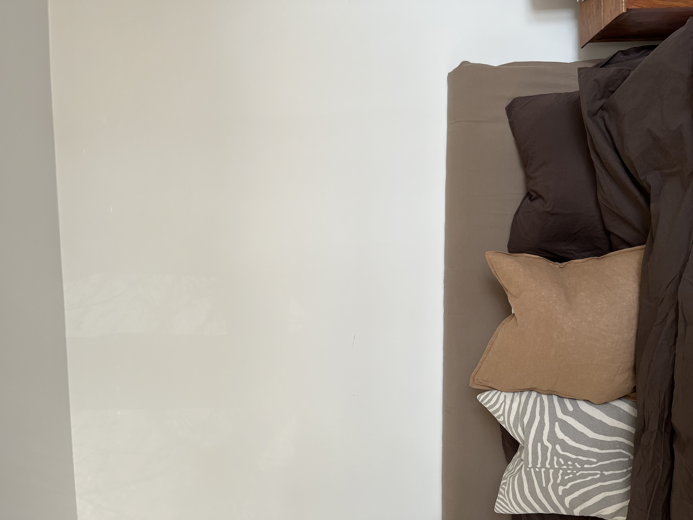
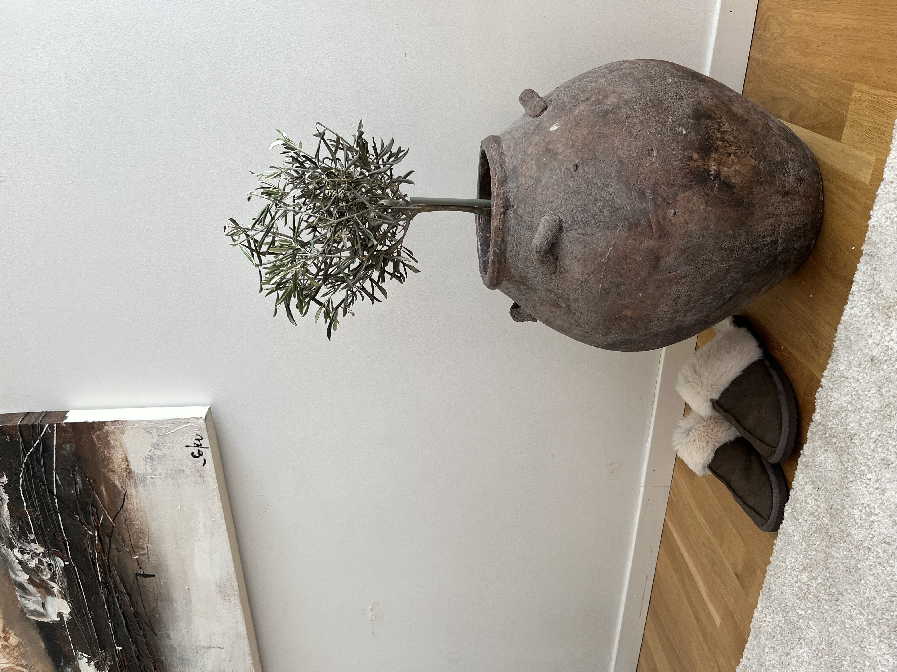
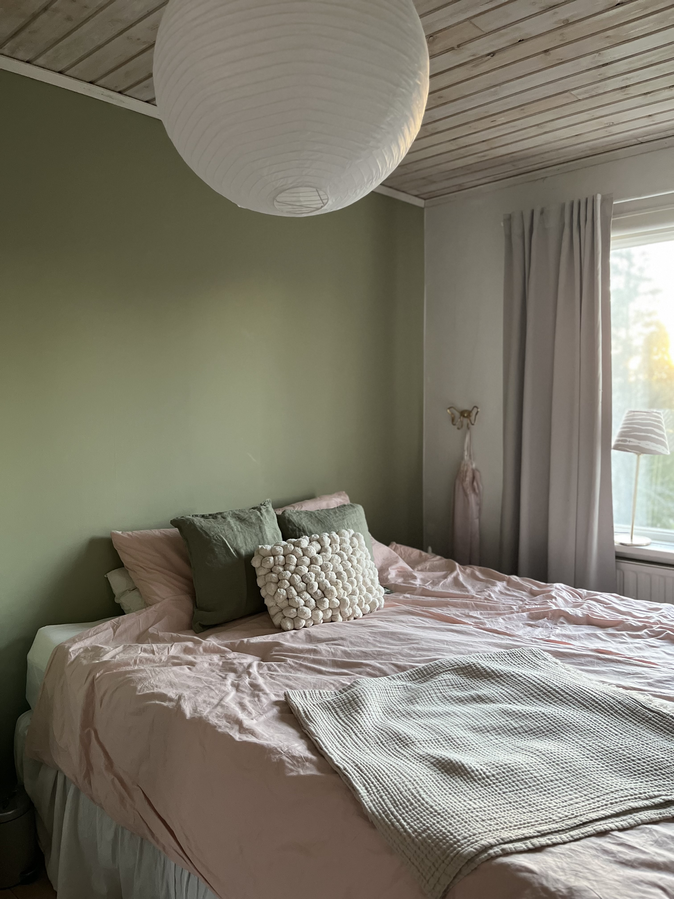
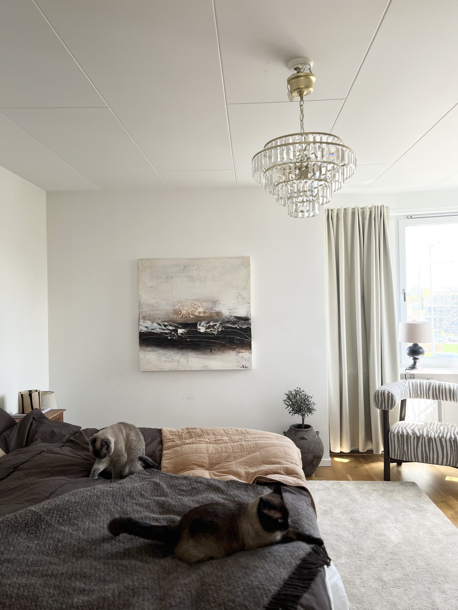

BRONS
FÄRG- &
KONCEPTPAKETET
1000,00 SEK
- Färgsättning
- Digitala moodboards
- Materialprover


Få komplett moodboard/schematisk moodboard digitalt, färgsättning och materialprover för att enkelt kunna genomföra designförändringar i din egen takt.
Professionell styling som hjälper din lägenhet att sticka ut och säljas snabbare. Nedan finns en länk på ett exempel på hur ett homestylinguppdrag kan se ut: Homestylinguppdrag.
Vi skapar inspirerande och välkomnande miljöer för både ditt hem och arbetsplats. Detta genom att ta fram allt från kompletta moodboards till produktlista.






KONTAKTA OSS
Oavsett om du vill skapa ett personligt boende eller förbättra din arbetsplats, finns vi här för att hjälpa dig.